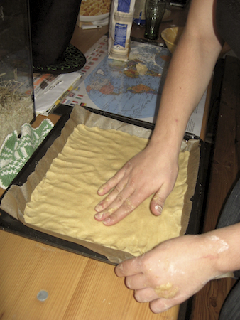
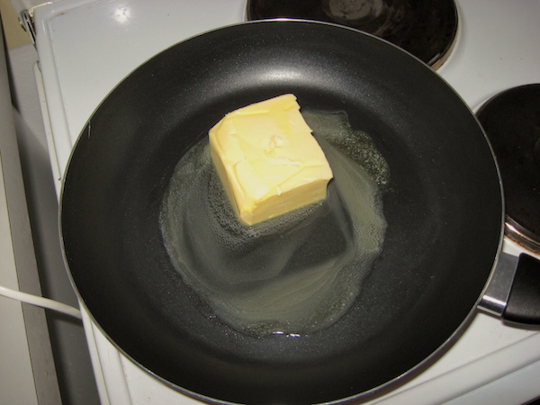
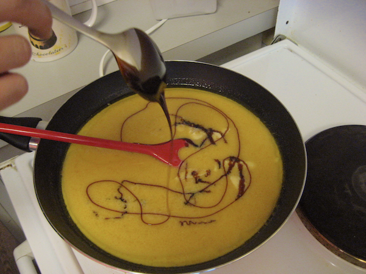
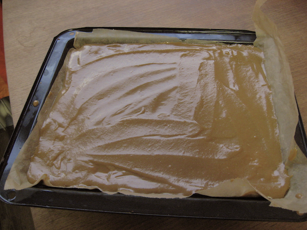
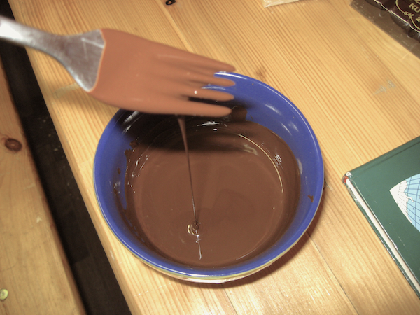
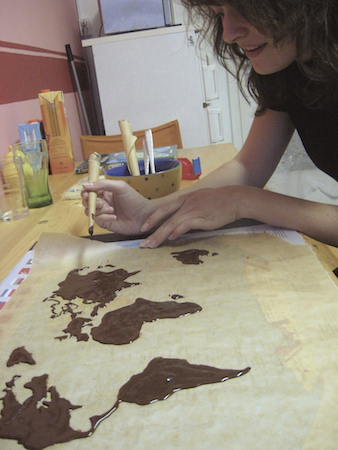
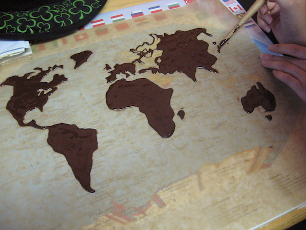
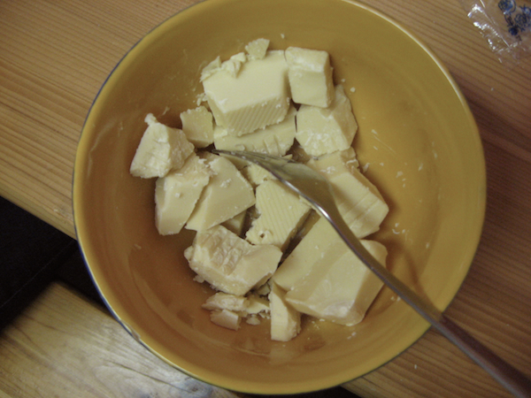
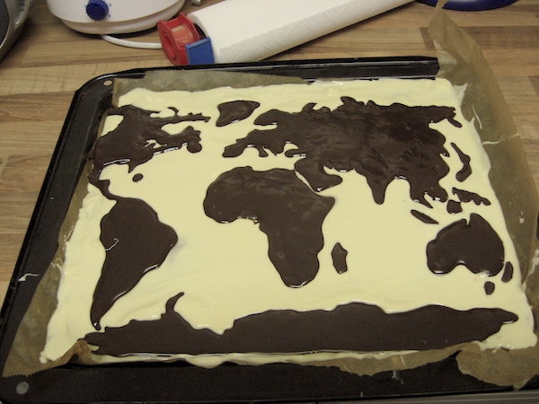
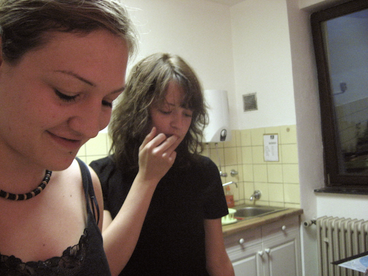

Cathy and me making a world map cake.
Picture 1
of 10
cookie dough for the base
melting butter...
...to make caramel
baked cookie covered with a layer of caramel
chocolate ink
map drawing
chocolate world
background color
world map cake
cartocakegraphers«»